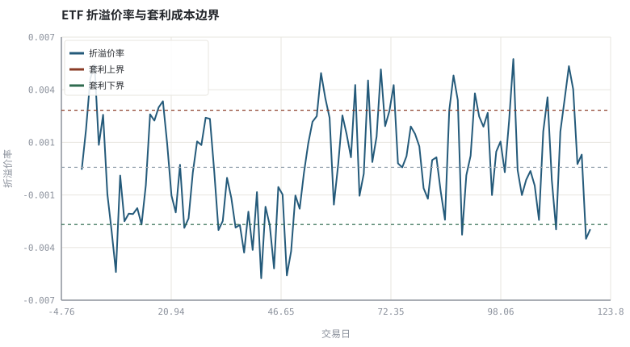
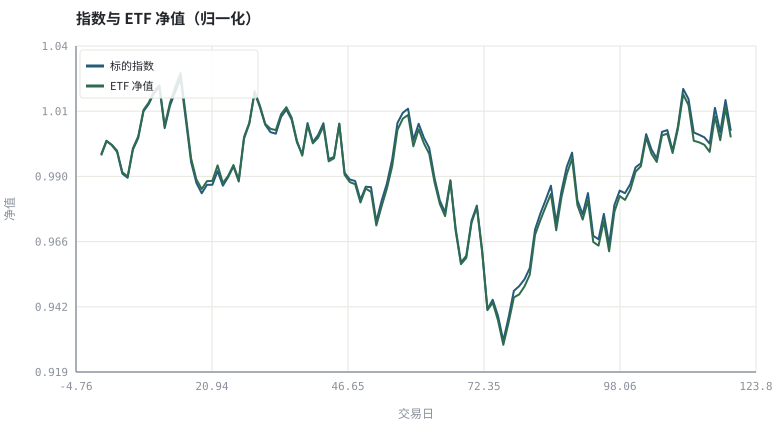

第 07 章公募基金与 ETF：净值、申赎与跟踪
基金不是一只股票，而是一份「按份额比例分配的组合净值」接口。
本章位置：第 06 章解决「价格序列可比」，本章解决「份额序列可比」；第 11 章 · 指数、折溢价与 ETF 套利机制 把申赎机制写成无套利边界，第 14 章 · 资产配置、再平衡与定投 用基金实现资产配置。
基金份额是一个 view：NAV 是底层组合投影出的只读属性，申赎是对 view 的 insert/delete，折溢价则是两个不一致的数据副本之间的复制延迟。套利就是一致性修复进程。
- 能说明场外基金申赎与 ETF 场内交易的区别。
- 能计算 NAV、折溢价率与跟踪误差。
- 能解释申赎套利为什么会把 ETF 价格拉回净值附近。
- 能指出基金页面常见字段的口径（累计净值、单位净值、复权净值）。
§知识点地图
每个知识点都配了 1～2 个扩展学习链接；本章完整资源清单见 扩展学习。
| # | 知识点 | 扩展学习 | 状态 |
|---|---|---|---|
| 1 | 单位净值与累计净值 | Net asset value · Tracking error | 正文已覆盖 |
| 2 | 未知价申赎 | Exchange-traded fund · Mutual fund | 正文已覆盖 |
| 3 | 份额确认与到账 | Exchange-traded fund · Net asset value | 正文已覆盖 |
| 4 | ETF 一级与二级市场 | Exchange-traded fund · Index fund | 正文已覆盖 |
| 5 | 折溢价率 | Exchange-traded fund · Net asset value | 正文已覆盖 |
| 6 | 申赎清单与套利 | Exchange-traded fund · Mutual fund | 正文已覆盖 |
| 7 | 跟踪误差与跟踪偏离 | Tracking error · Exchange-traded fund | 正文已覆盖 |
| 8 | 费率与规模 | Expense ratio · Index fund | 正文已覆盖 |
§7.1两条交易链路
- 场外开放式基金：按未知价向基金公司申赎，以当日收盘后计算的 NAV 成交；T 日申请、T+1 确认份额、赎回款再等若干日到账。
- ETF：二级市场像股票一样按盘中价格买卖；同时存在一级市场，授权参与商可用一篮子证券申购份额、或赎回换回一篮子，这是折溢价的收敛机制。
NAV = (组合资产市值 − 负债) / 存续份额 | 折溢价率 = 场内价格 / NAV − 1
净值字段要分清：单位净值是每份价格，累计净值加上历史分红，而做收益分析应该用复权净值（把分红再投资）。这与第 06 章的复权价是同一个思想。
§7.2跟踪误差不是「涨得少」
跟踪偏离 = r_基金 − r_指数 | 跟踪误差 = stdev(跟踪偏离)
跟踪偏离是方向性偏差（费率、现金拖累、抽样复制），跟踪误差是波动。一只基金可以长期跑输指数 1%（偏离为负）但跟踪误差很小，说明它稳定地扣了成本；另一只基金平均打平但误差很大，说明复制机制不稳定。评估指数产品时两者都要看。
§7.3套利把溢价压回成本边界
当 |折溢价率| > 申赎成本 + 冲击成本 时，一级市场申购→二级卖出（或反向）存在无风险空间，套利资金会迅速把价差压回边界内。因此折溢价不是免费的择时信号，它更多反映流动性、停牌成分股与跨境时差。第 11 章会把这条机制写成可计算的边界。
跨境 ETF、商品 ETF 与含停牌成分股的 ETF 常出现较大且持续的折溢价，因为申赎受限、净值本身是滞后估计。看到「溢价 8%」先查申赎是否开放。
§Python 分析实例
实验 7-1 · 净值、折溢价与申赎套利收敛
#!/usr/bin/env python3
# -*- coding: utf-8 -*-
"""合成指数与 ETF 净值，加入均值回复的折溢价与套利阻尼，计算跟踪误差与套利触发次数。
数据为合成数据或模型示意，仅用于教学，不构成投资建议。
"""
from __future__ import annotations
import math
import pathlib
import random
import statistics
import sys
sys.path.insert(0, str(pathlib.Path(__file__).resolve().parents[3] / "tools"))
from chart import Chart, candlestick, heatmap, BLUE, RED, GREEN, AMBER
FIG = pathlib.Path(__file__).resolve().parents[1] / "fig"
FIG.mkdir(exist_ok=True)
random.seed(7)
# ---- 参数区 ----
N = 120 # 交易日
FEE_DAILY = 0.00002 # 管理费与现金拖累（按日）
TRACK_NOISE = 0.0004 # 抽样复制噪声
ARB_COST = 0.003 # 申赎 + 冲击成本边界
PREM_VOL = 0.002 # 折溢价冲击
PREM_AR = 0.85 # 折溢价自相关
ARB_DAMP = 0.55 # 套利发生后的收敛系数
# ---- 计算与作图 ----
rng = random.Random(7)
idx_ret = [rng.gauss(0.0004, 0.009) for _ in range(N)]
noise = [rng.gauss(0, TRACK_NOISE) for _ in range(N)]
noise_mean = statistics.fmean(noise)
noise = [e - noise_mean for e in noise] # 去均值：让复制噪声只影响误差、不污染偏离
nav_ret = [r - FEE_DAILY + e for r, e in zip(idx_ret, noise)]
idx, nav, idx_v, nav_v = [], [], 1.0, 1.0
for ri, rn in zip(idx_ret, nav_ret):
idx_v *= (1 + ri)
nav_v *= (1 + rn)
idx.append(idx_v)
nav.append(nav_v)
prem, prem_series, arb_hits = 0.0, [], 0
for _ in range(N):
if abs(prem) > ARB_COST:
prem *= ARB_DAMP
arb_hits += 1
prem = PREM_AR * prem + rng.gauss(0, PREM_VOL)
prem_series.append(prem)
price = [v * (1 + p) for v, p in zip(nav, prem_series)]
dev = [rn - ri for ri, rn in zip(idx_ret, nav_ret)]
tracking_error = statistics.pstdev(dev)
tracking_diff = statistics.fmean(dev)
c = Chart(FIG / "07-premium.svg", "ETF 折溢价率与套利成本边界", xlabel="交易日", ylabel="折溢价率")
c.line(range(N), prem_series, BLUE, label="折溢价率")
c.hline(ARB_COST, RED, label="套利上界")
c.hline(-ARB_COST, GREEN, label="套利下界")
c.hline(0.0, "#9aa6b2")
print("折溢价图:", c.save())
t = Chart(FIG / "07-tracking.svg", "指数与 ETF 净值（归一化）", xlabel="交易日", ylabel="净值")
t.line(range(N), idx, BLUE, label="标的指数")
t.line(range(N), nav, GREEN, label="ETF 净值")
print("跟踪图:", t.save())
print("年化跟踪误差=%.3f%% 日均跟踪偏离=%.5f%% | 平均|溢价|=%.3f%% 套利触发=%d 次" %
(100 * tracking_error * math.sqrt(252), 100 * tracking_diff,
100 * statistics.fmean(abs(x) for x in prem_series), arb_hits))操作：把 ARB_DAMP 改成 1.0（套利失效），观察折溢价是否突破边界并持续不回归。 预期与判读：套利阻尼让折溢价大多落在 ±成本边界内；跟踪误差主要来自复制噪声，而日均跟踪偏离主要由费率决定。稳定的负偏离与不稳定的误差是两件事。
改参数看趋势：把 FEE_DAILY 提高十倍，跟踪偏离会明显变负，但跟踪误差几乎不变——验证两者的区别。 文件位置：part1/07-funds-etf/code/07-etf.py


代码块右上角可一键复制；仓库里的 code/*.py 由 tools/extract_code.py 从这些代码块自动抽取。脚本只用标准库、固定 random.seed(7)，运行后写出 fig/*.svg；批量运行用 ./tools/run_python.sh。
§本章参考资料
按本章知识点挑选的精读资料；更多检索入口见 扩展学习。
Exchange-traded fund
百科 · 参考资料场内交易、申赎与跟踪指数
怎么用：一级/二级市场与申赎机制https://en.wikipedia.org/wiki/Exchange-traded_fund
§常见误区
- 用单位净值直接算长期收益，漏掉分红。
- 把场外基金按盘中价格申赎。
- 把 ETF 的高溢价当作看涨信号，忽略申赎受限与净值滞后。
- 只看跟踪误差，不看跟踪偏离的方向。
§习题与思考
- 在示例中加入一次分红，说明单位净值、累计净值与复权净值各自怎么变。
- 推导
跟踪误差 × sqrt(252)年化的前提假设，并说明何时不成立。 - 查一只跨境 ETF 的历史折溢价，判断它是否长期超出示例的成本边界。
§扩展学习
以下资料按本章知识点挑选，可直接精读或对照真实数据；知识点地图里每一条也挂了 1～2 个直达链接。
- Exchange-traded fund（百科）：场内交易、申赎与跟踪指数
Exchange-traded fund - Net asset value（百科）：基金份额净值的计算口径
Net asset value - Tracking error（百科）：组合与基准收益差的标准差
Tracking error - Expense ratio（百科）：长期复利下最确定的负项
Expense ratio - Mutual fund（百科）：净值申赎与开放式基金运作
Mutual fund
继续扩展：在 Google Scholar 检索本章相关论文 · 在 MIT OCW 检索配套课程 · 在 arXiv 检索预印本 · 全书参考资源总表 · 附录 A 速查与链接总表
§延伸阅读与内链
- 第 11 章 · 指数、折溢价与 ETF 套利机制 指数编制与折溢价套利；第 14 章 · 资产配置、再平衡与定投 用基金做资产配置；第 27 章 · 绩效度量与归因：夏普、回撤与 Brinson 相对基准的信息比率。